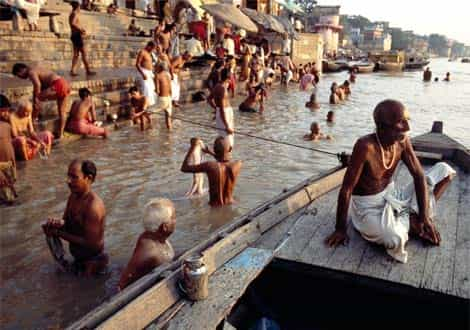

This account syndicates news from other media outlets.


The United States has been ranked for the first time among the 10 nations deemed to be the most dangerous for women by experts in the field. A survey by the Thomson Reuters Foundation of about 550 experts in women’s issues around the globe labeled the U.S. the 10th most dangerous nation in terms of the risk of sexual violence, harassment and being coerced into sex.
The foundation said the U.S. placement on the dubious list was down largely to the #MeToo and Time’s Up campaigns increasing awareness of sexual violence and intimidation of women in the U.S. in the wake of the criminal allegations against movie mogul Harvey Weinstein.
“People want to think income means you’re protected from misogyny, and sadly that’s not the case,” Cindy Southworth, of the Washington-based National Network to End Domestic Violence, told the foundation. “We are going to look back and see this as a very powerful tipping point… We’re blowing the lid off and saying ‘#Metoo and Time’s Up’.”
Cindy Southworth looks exactly like you’d expect!
According to the survey, which was last carried out in 2011 and did not then rank the U.S. among the top 10 most dangerous nations, India is the most perilous country for women right now.
The survey noted that Indian government data shows reported crimes against women were up 83 percent between 2007 and 2016. During that year, there were an average of four rapes reported every hour in India.
India has seen a series of horrific attacks on women in recent years, the most recent example being five female activists working to raise awareness of human trafficking who were gang-raped at gunpoint in the eastern Indian state of Jharkhand just last week.
Other Indian women and even young girls have brutally assaulted, a couple even set on fire, in recent attacks, which have drawn huge protests onto the streets in defense of women’s right to safety.

Most of the other countries in the top-10 determined by the foundation’s survey are countries with ongoing military conflicts or insurgencies, or where long-held religious and political views have kept women on an unequal footing in terms of law enforcement and treatment in society generally.
The foundation asked the experts which five of the 193 United Nations member states they felt were “most dangerous for women and which country was worst in terms of health care, economic resources, cultural or traditional practices, sexual violence and harassment, non-sexual violence and human trafficking,” according to the foundation’s article on the survey.
Immediately behind India in the survey were Afghanistan and Syria. The full list of the 10 most dangerous countries for women, as picked by the experts surveyed by the foundation is as follows:
1. India
2. Afghanistan
3. Syria
4. Somalia
5. Saudi Arabia
6. Pakistan
7. Democratic Republic of Congo
8. Yemen
9. Nigeria
10. United States
This place (Nigeria) is as dangerous for women as the USA
Don’t Miss: Would The World Be Safer For Women If They Were Declared The Legal Property Of Men?